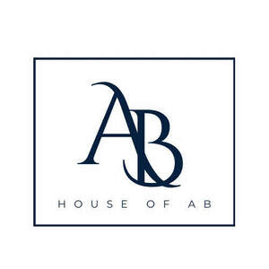

Trade Mark Journal No.2026/007 13 February 2026
UK00004330354 27 January 2026 (1,3,21,35)

- Class 1
- Alcohol for use in the manufacture of perfumes; Synthetic fragrance ingredients; Chemical products for the preparation of perfumes; Chemical substances for use in the manufacture of scented cosmetics; Chemical substances for use in the manufacture of perfumes; Chemical substances for use in the manufacture of scented toiletries; Musk for use in manufacture.
- Class 3
- Perfume; Perfumes; Perfume oils; Perfumery and fragrances; Fragrances; Oils for perfumes and scents; Cologne; Aromatics for perfumes; Room perfume sprays; Liquid perfumes; Colognes; Scents; Aromatics for fragrances; Perfumery; Eau de cologne [cologne water]; Body fragrances; Fragrance preparations; Perfume oils for the manufacture of cosmetic preparations; Household fragrances; Room perfumes in spray form; Natural oils for perfumes; Room fragrances; Perfumery products; Perfumed soaps; Scented oils; Synthetic perfumery; Air fragrance reed diffusers; Aftershaves; Scented body lotions; Incense spray; Perfumed creams; Scented body spray; Eau de Cologne; Eau de cologne; Essences for fragrancing; Eau de colognes; Scented room sprays; Fragrance for household purposes; After-shave; Eaux de Cologne; Eaux de cologne; Aftershave creams; Scented body lotions and creams; Cosmetics; Eau de parfum; Moisturisers [cosmetics]; Scented body creams; Skincare cosmetics; Hand cream; Hand creams; Cosmetic hand creams; Hand lotions; Hand and body butter; Hand lotion (Non-medicated -); Lip cream; Hand washes; Body cream; Face creams; Skin cream [for cosmetic use]; Lip gloss; Lip glosses; Lip balm; Lip balms; Lip balm [non-medicated]; Lip balms [non-medicated]; Non-medicated lip balms; Lipstick; Moisturiser.
- Class 21
- Perfume atomisers; Perfume bottles; Perfume sprayers; Perfume vaporizers; Perfume atomizers [empty]; Vaporizers for perfume [empty]; Scent sprays [atomizers]; Perfume sprays, sold empty; Perfume sprayers [sold empty]; Perfume bottles sold empty; Vaporizers for perfume sold empty.
- Class 35
- Marketing research in the fields of cosmetics, perfumery and beauty products.
Scents by Ab Ltd